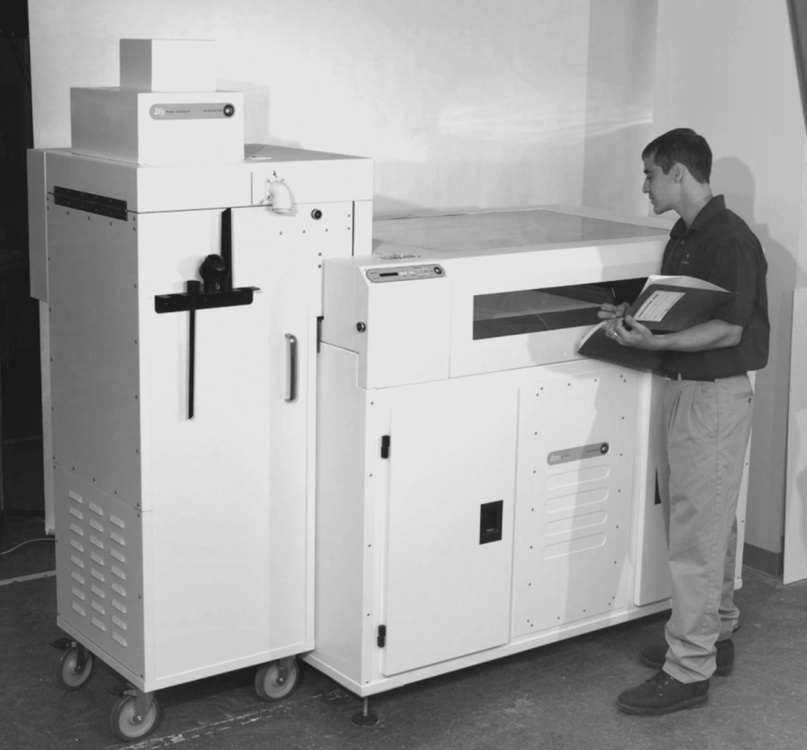

"Every 3D printer builds parts based on the same main principle: a digital model is turned into a physical three-dimensional object by adding material a layer at a time. This where the alternative term Additive Manufacturing comes from. 3D printing is a fundamentally different way of producing parts compared to traditional subtractive (CNC machining) or formative (Injection molding) manufacturing technologies. In 3D printing, no special tools are required (for example, a cutting tool with certain geometry or a mold). Instead the part is manufactured directly onto the built platform layer-by-layer, which leads to a unique set of benefits and limitations. The process always begins with a digital 3D model - the blueprint of the physical object. This model is sliced by the printer's software into thin, 2-dimensional layers and then turned into a set of instructions in machine language (G-code) for the printer to execute. From here, the way a 3D printer works varies by process. For example, desktop FDM printers melt plastic filaments and lay it down onto the print platform through a nozzle (like a high-precision, computer-controlled glue gun). Large industrial SLS machines use a laser to melt (or sinter) thin layers of metal or plastic powders. The available materials also vary by process. Plastics are by far the most common, but metals can also be 3D printed. The produced parts can also have a wide range of specific physical properties, ranging from optically clear to rubber-like objects. Depending on the size of the part and the type of printer, a print usually takes about 4 to 18 hours to complete. 3D printed parts are rarely ready-to-use out of the machine though. They often require some post-processing to achieve the desired level of surface finish. These steps take additional time and (usually manual) effort." - 3dhubs.com
The sci-fi author, Arthur C. Clarke, was the first to describe the basic functions of a 3D printer back in 1964. The first 3D printer was released in 1987 by Chuck Hull of 3D Systems and it was using the "stereolithography" (SLA) process.
In the 90's and 00's other 3D printing technologies were released, including FDM by Stratasys and SLS by 3D Systems. These printers were expensive and mainly used for industrial prototyping. In 2009, the ASTM Committee F42 published a document containing the standard terminology on Additive Manufacturing. This established 3D printing as an industrial manufacturing technology. In the same year, the patents on FDM expired and the first low-cost, desktop 3D printers were born by the RepRap project. What once cost $200,000, suddenly became available for below $2,000. According to Wohlers the adoption of 3D printing keeps growing: more than 1 million desktop 3D printers were sold globally between 2015 and 2017 and the sales of industrial metal printers almost doubled in 2017 compared to the previous year.
Charles "Chuck" Hull invented the first form of 3D printing - Stereolithography.
Hull coined the term Stereolithography when he patented his new system.
The first ever 3D organ, a bladder, is created with the patient's own cells. This means that there is little chance of the organ being rejected by the body.
The Selective Laser Sintering machine is built and allows for mass customisation in manufacturing industrial parts.
A prosthetic leg is created with a complex structure that requires no assembly. This opens the doorway to customised prosthetic limbs.
Printing Service, i.materialise, starts offering 14K gold and sterling silver as a printable material.